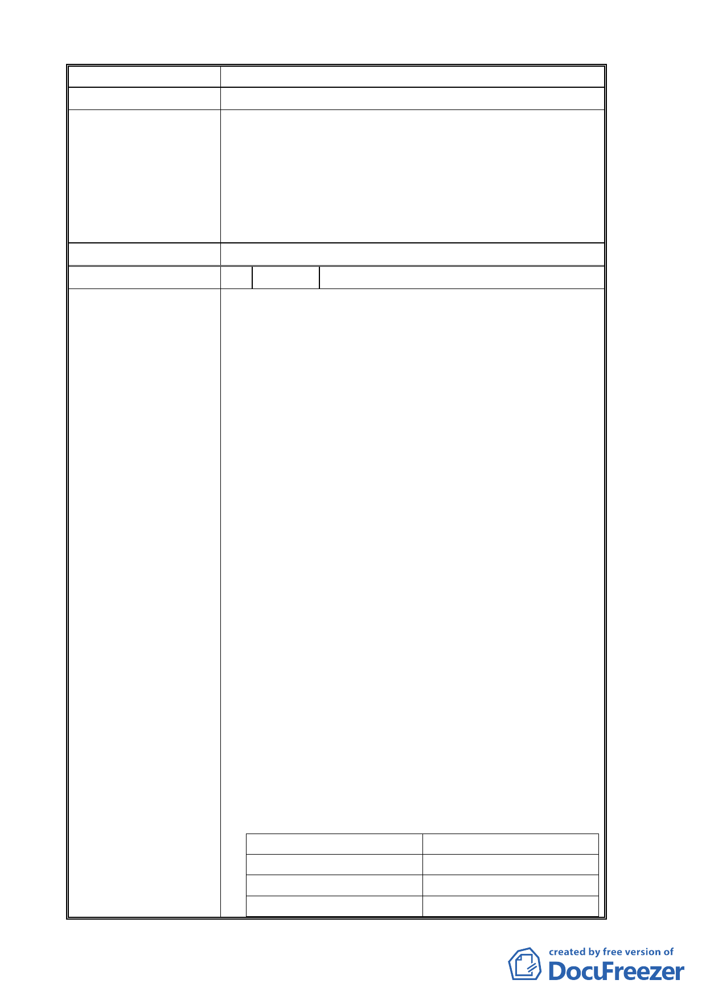

已存在之建築請不要徵收、拆屋。
建 議 辦 法 原住宅房屋保留。
申請單位回應意見 1. 指南山莊北側萬壽路旁建物皆位於沿街面，屋齡大多超過
50 年，多為一樓低矮建物，結構及安全性不佳，影響環
境景觀。
2. 現況沿著萬壽路兩旁並無人行空間提供，為配合本案都市
設計管制規則退縮建築規定，以留設人行及自行車道空
間，為利於地區環境景觀塑造，故將本區一併納入變更為
大專用地。
委員會決議 同編號 1。
編 號 4 陳情人 謝啟泰
陳 情 理 由 壹、 主要計畫案第20頁、圖9(第22頁)-2.交通改善構
想（1）長期改善構想-B. 未來配合政大門口三角
地與東西側公共設施保留地的都市更新案，以劃
設新道路方式，使車行動線由道南橋進入政大後
直接連通萬壽路……。
1. 指南路二段北側約150公尺範圍內計有6處原
都市計畫路口未開發完成（未開發比例為46%
左右）
2. 憲法保障人民財產居住自由之權利，新劃設道
路將拆除百來戶合法建物，其中將造成一棟8
層地下2層合法建物地下停車無法進入及數十
筆畸零地等影響。
3. 依980123公告通盤檢討：指出政大生活圈交通
瓶頸、位於指南路三段->三角公園(P110編號
13案)並非指南路二段上。
4. a.82年開路拆政大四小段595及595-1地號。
b.87年徵校地拆政大五小段130地號。
c.90年代末第三度以新劃設道路將拆政大四
小段806地號上同一家族謝氏宗祠及墓塔。
貳、
1.大學法第一條：大學以研究學術，培育人才，提升文
化，服務社會，促進國家發展為宗旨。
2.粗估景美溪東側、指南路二段、萬泰路兩側平地地段，
其南北兩側各約 150 公尺範圍內，其臺北市土地使用
分區中第 17、19、20、21、22 組之商業活動在三角地
都更前後推算。
都更前約 20137m2
都更後約 27307m2
居民約 56.5%
居民約 57.2%
政大約 36.6%
政大約 37.8%
熊威約 6.9%
熊威約 5%
-8-